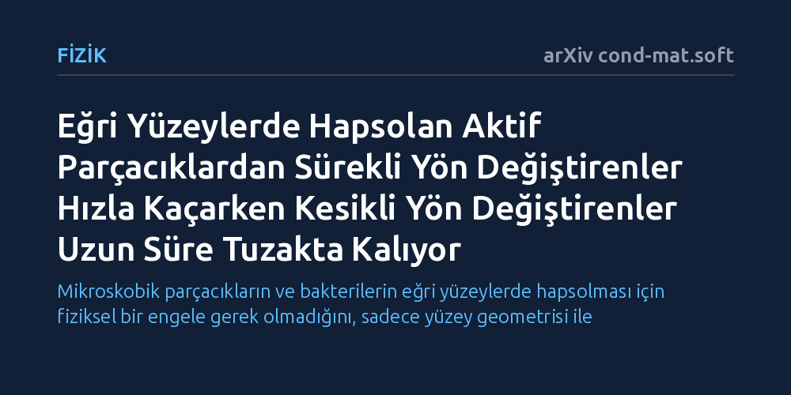

FIZIK · arXiv cond-mat.soft · 2026-09-11
Çalışma, eğri yüzeylerdeki geometrik rotalara hapsolan aktif parçacıkların fiziksel engel olmadan nasıl kaçtığını inceledi. Sürekli dönen Browniyen parçacıkların yüksek hızlarda tuzaktan kolayca kaçtığı, kesikli yön değiştirenlerin ise çok daha uzun süre hapsolduğu ve yüzey eğriliğinin kaçış süresini belirlediği bulundu.
Mikroskobik parçacıkların ve bakterilerin eğri yüzeylerde hapsolması için fiziksel bir engele gerek olmadığını, sadece yüzey geometrisi ile parçacığın yön değiştirme biçiminin bu hareketi tamamen belirleyebildiğini gösterir.

Mikro dünyada bakteriler veya yapay mikroskobik robotlar gibi kendi enerjisiyle hareket edebilen aktif parçacıklar, düz zeminlerde serbestçe yol alırken eğri ve engebeli zeminlerde şaşırtıcı davranışlar sergiler. Gündelik hayatta bir nesneyi bir yere hapsetmek için etrafına duvarlar veya bariyerler örmek gerektiği düşünülür. Ancak eğri yüzeylerin geometrisi, üzerinde hareket eden bu küçük yüzücüler için görünmez kapanlar yaratabilmektedir.
Araştırmacıların peşine düştüğü temel soru, yüzeydeki en kısa ya da en düz yollar olan kapalı jeodezik hatlar üzerinde dönüp duran parçacıkların bu geometrik kapanlardan nasıl kurtulduğudur. Özellikle parçacığın yönünü değiştirme şeklinin ve yüzeyin eğrilik derecesinin bu kaçış sürecini nasıl etkilediği, hem mikroskobik canlıların biyolojik göçünü hem de hedefe ilaç taşıyan mikro robotların yönlendirilmesini anlamak açısından büyük önem taşır.
Çalışmada yazarlar, eğri yüzeyler üzerindeki parçacık hareketlerini incelemek için istatistiksel fizik ve diferansiyel geometriyi birleştiren teorik bir modelleme yaklaşımı benimsedi. İki temel aktif parçacık davranışı ele alındı: Yönünü sürekli ve yumuşak şekilde değiştiren aktif Browniyen parçacıklar ile doğrusal yüzüp aniden rastgele dönen bakterilere benzer kesikli parçacıklar.
Araştırmacılar, parçacıkların yönlü hızlarının rastgele yayılmaya oranını temsil eden Péclet sayısını ve yüzeyin yerel şeklini tanımlayan Gauss eğriliğini değişken olarak kullandı. Parçacığın kapalı bir rota etrafında geçirdiği ortalama süreyi ve bu tuzaktan kurtulma anını matematiksel olarak modelleyerek ortalama çıkış süresinin asimptotik ölçekleme denklemlerini türetti.
Analizler, yüksek Péclet sayılarında—yani parçacığın kendi itici gücünün baskın olduğu durumlarda—iki hareket tarzı arasında köklü bir ayrım ortaya koydu. Sürekli dönerek yön değiştiren aktif Browniyen parçacıklar dönme difüzyonu sayesinde geometrik tuzaklardan verimli ve hızlı bir şekilde kaçarken, kesikli yön değiştiren parçacıkların rotada çok daha uzun süre tutsak kaldığı belirlendi.
Düşük Péclet sayılarında ise parçacıkların kendine has itki tarzları önemini yitirerek her iki grubun da pasif difüzyon davranışına gerilediği saptandı. Ayrıca yüzeyin Gauss eğriliğinin komşu jeodezik rotaları birbirine odaklaması veya dağıtması sayesinde kaçış dinamiklerini doğrudan denetlediği ve çıkış süresinin karakterini kökten değiştirdiği gösterildi.
Bu bulgular, eğimli biyolojik dokularda ya da gözenekli ortamlarda bakterilerin nasıl yayıldığını anlamak için yeni bir fiziksel çerçeve sunmaktadır. Fiziksel bir engel olmasa dahi sadece yüzeyin geometrisi kullanılarak belirli hareket modellerine sahip mikroorganizmaların bir bölgede tutulabileceğini veya tam tersine yönlendirilebileceğini ortaya koyar.
Elde edilen teorik sonuçlar, gelecekte kavisli yüzeylere sahip sentetik taşıyıcıların tasarımında ve biyomedikal mikro robotların karmaşık dokulardaki hareket kontrolünde geometrinin bir kılavuz olarak kullanılabileceğini işaret etmektedir. Ancak bu öngörülerin pratik uygulamalara dönüşebilmesi için gerçek mikroskobik deneylerle test edilmesi gerekmektedir.